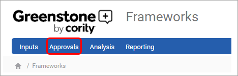
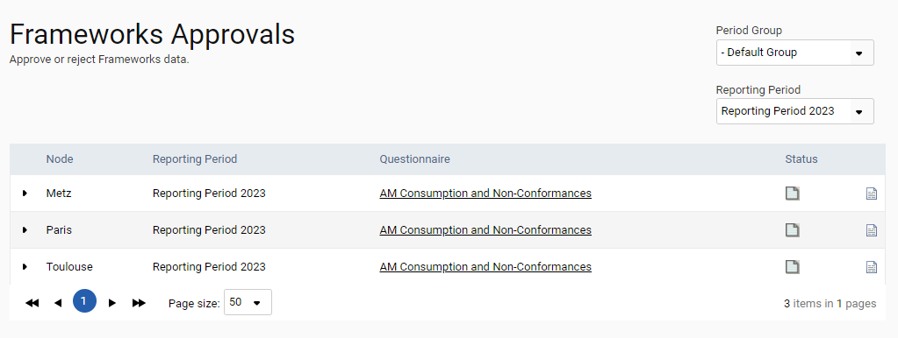
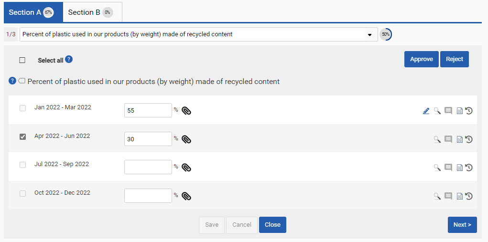
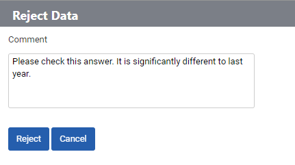

Frameworks approvals can be accessed from the navigation bar within the Frameworks module. You must have the frameworks approver user role for this to be visible.

The screen displays all the questionnaires that the logged in user will be responsible for approving in the selected period group. Select the name of the questionnaire you wish to review.

Responses can be viewed, compared with preceding reporting periods, and attachments viewed in a similar manner to the inputs section. Responses can be selected using the tick-box next to each question, or all available responses from a section can be selected at once using the select all button. If a response is not available for selection, then it has not yet been submitted for approval, or has already been rejected or approved. Click the Approve or Reject buttons to open a pop-up where the reasoning for approving or rejecting the selected responses can be provided.


Approvals commentary can be viewed by a user by clicking the icon associated with a question. If a response is rejected, the question is returned to the data input stage, and the rejection commentary is sent to the input user. This user can access the questionnaire again to review their response and submit it for approval again when they have edited their response appropriately. Approved responses are either moved to the next approvals stage or reach the approved status. Once fully approved, the response is locked.